Simplification of Logic Circuits
Logic Circuits
Boolean algebra allows us to apply provable mathematical principles to design logic circuits but this can be difficult and time consuming.
Instead, Karnaugh maps (K-maps) are used by designers as a more automated method to do this
The following labs go through some exercises for you to try out and solutions are provided at the end.
Karnaugh Maps
- The following demonstrate various inputs and their corresponding karnaugh maps used to simplify the Boolean expressions
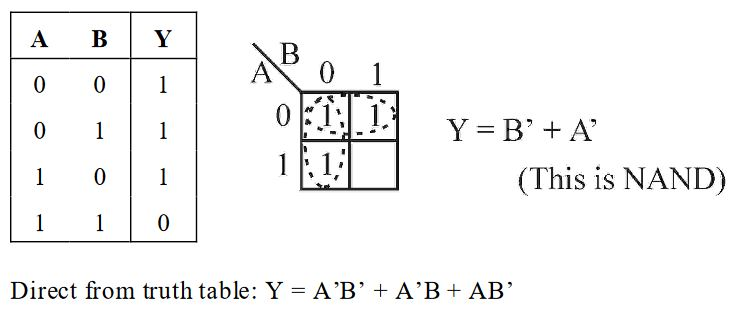
 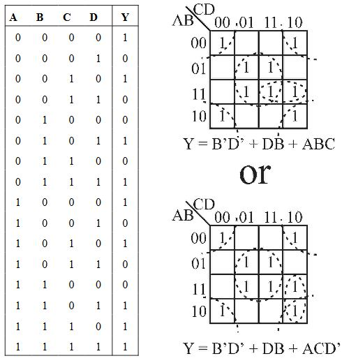
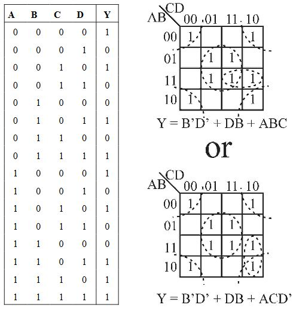
EXERCISE 1: Simplify the logic diagram below
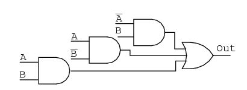
EXERCISE 2: Simplify the logic diagram below
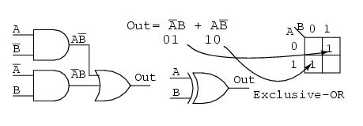
EXERCISE 3:
Reduce the following to it's simpliest Boolean Expression
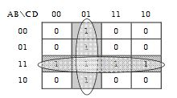
EXERCISE 4:
Reduce the following to it's simpliest Boolean Expression
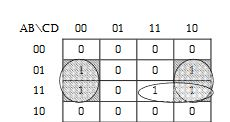
EXERCISE 5:
Use a K-map to reduce the following 4-input circuit.
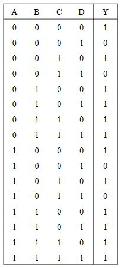
EXERCISE 6:
Simplify the following using
- the rules of Boolean Algebra and
- a Karnaugh map

Use of Circuitry Simulators
Logic circuit simulators can simulate electronic logic gates in an interactive environment on your computer. Such environments are often used to design circuits before implementing them with real electronic components
If you are interested in designing some circuitry, there are several nice simulators freely available.
One set of tools is called the Chipmunk System. It provides a wide variety of applicaations including electronic circuit simulation.
log is the program you need to download and run on your machine
Another such program is Multimedia Logic by Softronix.
Finally, you might choose to use Paul Falstad's online simulator
it might be interesting if you find alternatives, to post links on Slack to what you consider your best find!
Karnaugh Maps
EXERCISE: Simplify the logic diagram below
- Write the Boolean expression for the original logic diagram as shown below
- Transfer the product terms to the Karnaugh map
- Form groups of cells as in previous examples
- Write Boolean expression for groups as in previous examples
- Draw simplified logic diagram

EXERCISE 2: Simplify the logic diagram below
- Write the Boolean expression for the original logic diagram shown above
- Transfer the product terms to the Karnaugh map.
- It is not possible to form groups.
- No simplification is possible; leave it as it is.
NOTE No logic simplification is possible for the above diagram. This sometimes happens.
- Neither the methods of Karnaugh maps nor Boolean algebra can simplify this logic further.
- We show an Exclusive-OR schematic symbol above; however, this is not a logical simplification (It just makes a schematic diagram look nicer).
- Since it is not possible to simplify the Exclusive-OR logic and it is widely used, it is provided by manufacturers as a basic integrated circuit (7486)
EXERCISE 3:
Reduce the following to it's simpliest Boolean Expression

EXERCISE 4:
Reduce the following to it's simpliest Boolean Expression

EXERCISE 5:
Use a K-map to reduce the following 4-input circuit.
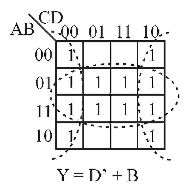
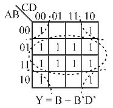
EXERCISE 6:
Simplify the following
- Here we are minimising the Boolean expression and therefore simplifying the circuitry needed to implement the equivalent functions:
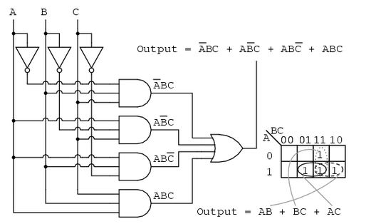